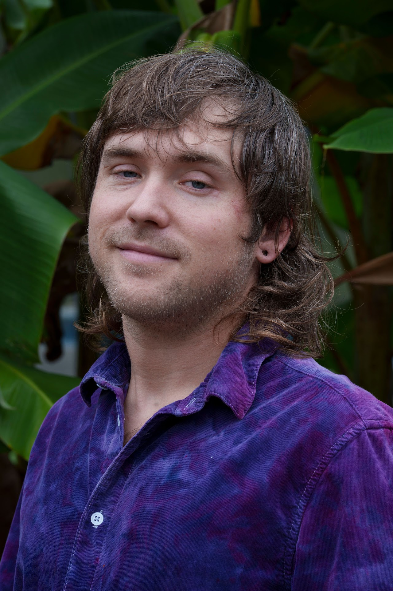
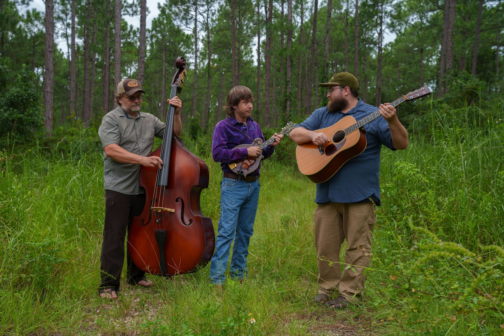
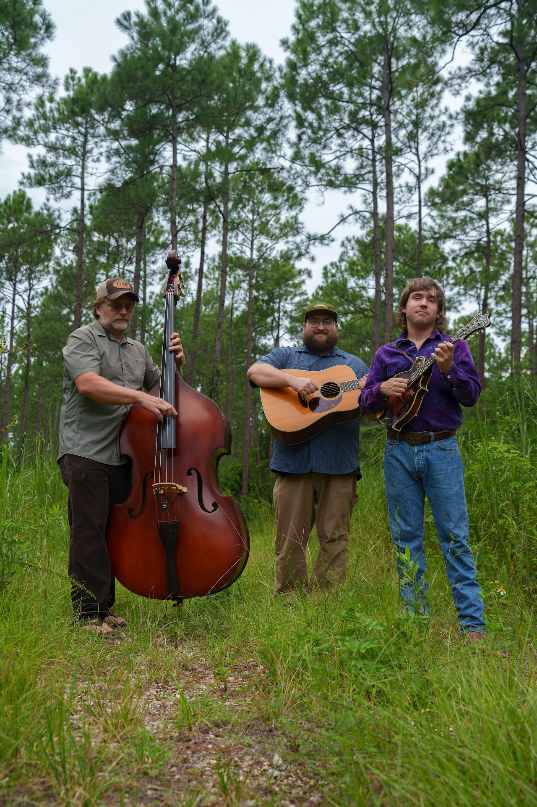
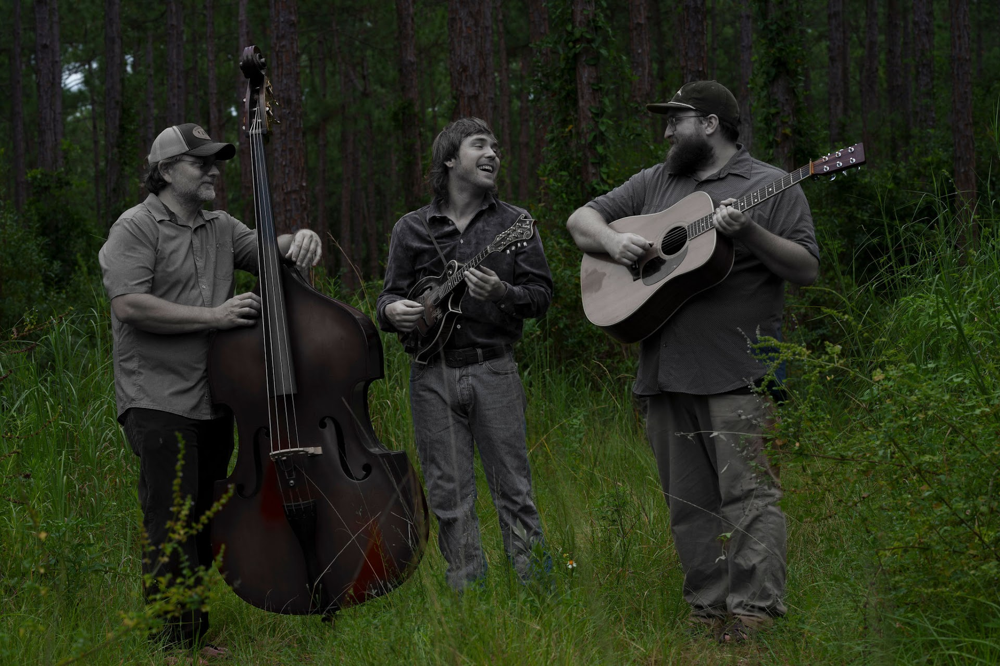
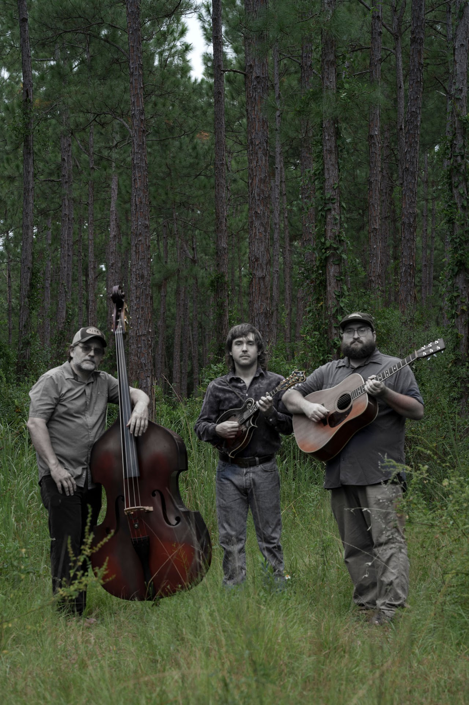
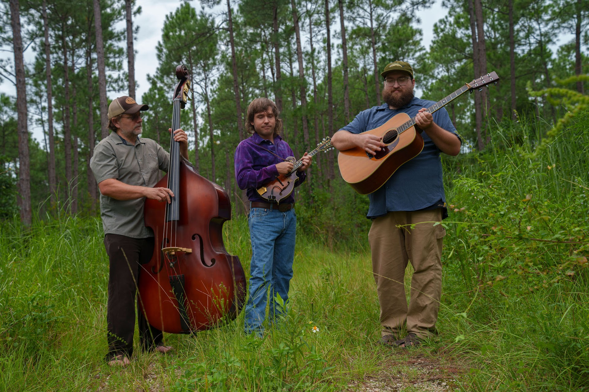
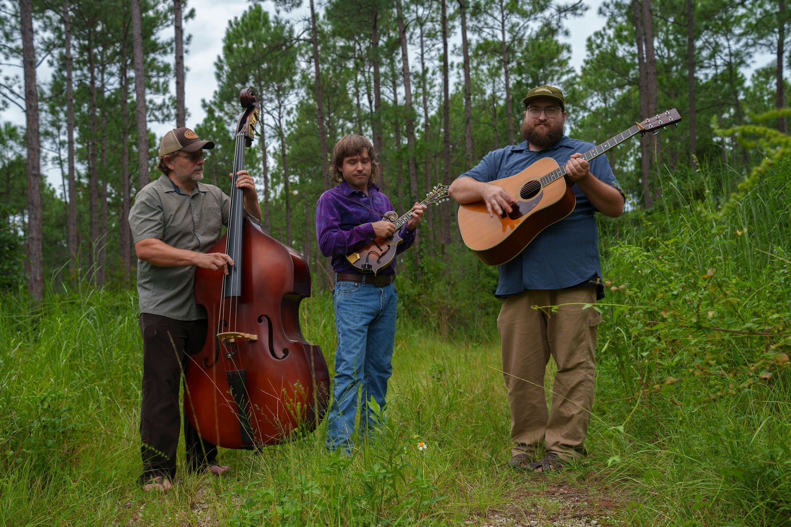
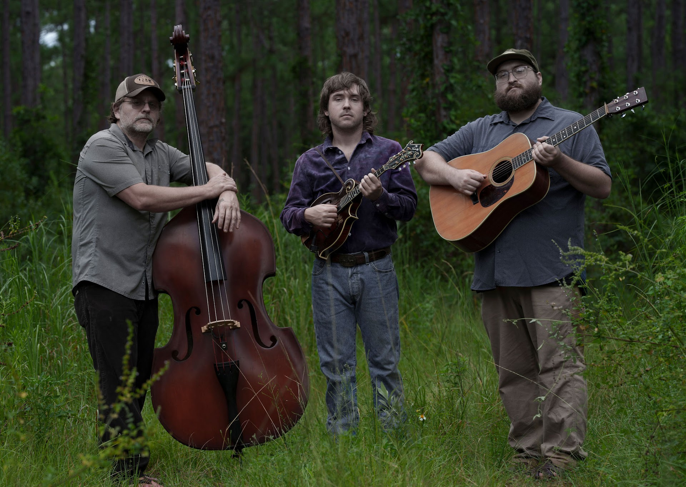
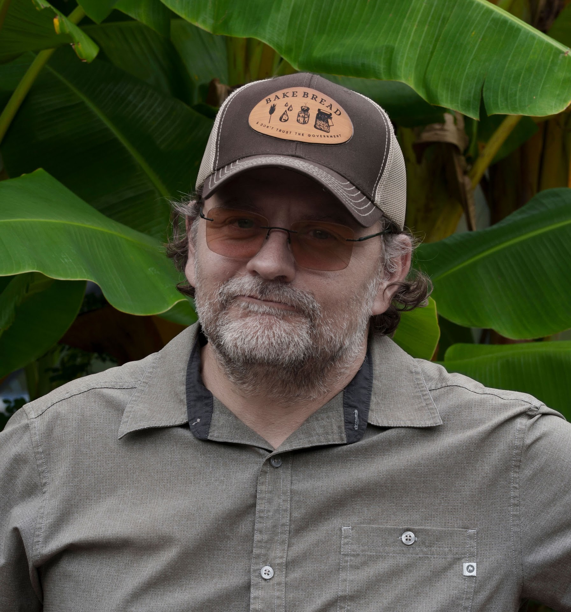

Mandolin · Lead Vocals
Brenan Woody
Lead vocals. Melts faces with a mandolin. Side effects may include uncontrollable dancing.
Acoustadelic swamp-grass from the Gulf Coast.
01 — The Sound
RPM started in 2018. The lineup's shifted over the years but the sound hasn't moved — acoustic instruments played loud, fast, and a little unhinged. Bluegrass kicks, jam-band detours, the occasional Waylon cover. It's not background music.
They call it acoustadelic. Part psychedelic, part swamp, part bluegrass. House band at the Red Bar in Grayton Beach, FL.







03 — The Band

Mandolin · Lead Vocals
Lead vocals. Melts faces with a mandolin. Side effects may include uncontrollable dancing.

Bass
The bassist, a noisemaker.

Acoustic Guitar
Six strings of feral swamp fury.
04 — Live · Recorded June 2026
Recorded live at Be Scene — Get Herd Studios, Pensacola, FL.
Into an extended jam.
Live recording.
Waylon Jennings, RPM-style.
05 — Booking
Clubs, festivals, private parties, residencies — Gulf Coast and beyond. Press, sync, and label inquiries all welcome.